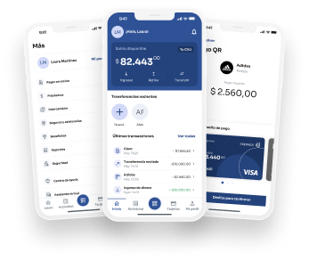

Proyecto Destacado · UX Lead
Suite Gonnectia — Diseño integral de producto para un ecosistema SaaS que conecta comercios, clientes y operaciones de cobranza con flujos completos navegables, AI integrada y expansión internacional.
Goiar es infraestructura fintech: le da a cualquier empresa las cuentas, los pagos y la adquirencia para que el dinero de su industria circule bajo su propia marca, en producción en 1 mes en lugar de los 12 a 24 meses que toma construir un fintech desde cero. Es una plataforma modular (Base + Emisión de cuentas y tarjetas, Pagos, Adquirencia e Inversiones) adaptada a más de una decena de industrias, desde agro hasta seguros y logística.
Como UX Lead en Goiar, lidero el diseño de producto end-to-end para esa plataforma: múltiples verticales — B2C (clientes finales), B2B (comercios), GoCollet (cobranzas), y BackOffice. El desafío es construir experiencias coherentes que escalen a través de diferentes roles, países y modelos de negocio.
El proyecto integra QA de diseño con AI, prototipado rápido con FigmaMake + Claude, y automatización de historias de usuario desde Jira. Trabajo en colaboración directa con Product, Dev, Comercial y clientes en América Latina.
01 — Widgets
Suite Gonnectia es un ecosistema multi-producto con flujos completos, navegables y listos para desarrollo y demos con clientes. Cada vertical requiere arquitectura de información específica y componentes reutilizables.
02 — Alcance
Investigación
Sesiones F&F con clientes, detección de bugs en flujos reales, propuestas de mejora con datos cuantitativos y cualitativos.
Estrategia
Rediseño de navegación por rol, simplificación de onboarding, mapeo de journey por vertical y país.
Diseño
Prototipos high-fidelity listos para desarrollo, validados con usuarios reales y equipos internos.
Sistema
Tokens, componentes reutilizables, documentación de patrones, versionado por plataforma (web/mobile).
Colaboración
Coordinación con Product, Dev, Comercial y Clientes. Ceremonias Agile, refinamiento de backlog, handoff a desarrollo.
Métricas
Tracking de KPIs de producto, análisis de sesiones, propuestas de optimización basadas en comportamiento real.
03 — Proceso
Entrevistas con stakeholders internos (Product, Comercial, Dev) y usuarios finales (comercios, equipos de cobranza). Análisis de flujos existentes, identificación de pain points críticos, benchmarking competitivo por vertical.
Definición de estructura de navegación por rol (Cliente, Comercio, Cobrador, Admin). Wireframes de baja fidelidad, validación de flujos con Product. Mapeo de componentes compartidos vs específicos por vertical.
High-fidelity mockups en Figma, prototipado interactivo con FigmaMake. Tests de usabilidad con usuarios reales por país. Iteración basada en feedback cuantitativo (métricas) y cualitativo (sesiones grabadas).
Documentación de especificaciones, handoff a desarrollo con Design System. QA de diseño en staging, detección de inconsistencias visuales y de UX. Ciclo continuo de mejora con feedback post-lanzamiento.
Verticales de producto
Países activos
Flujos diseñados
Clientes B2B
"El desafío de Goiar es diseñar coherencia en la complejidad: múltiples productos, roles, geografías y modelos de negocio bajo una experiencia unificada."

Goiar me permitió ejercer liderazgo de diseño en un contexto de alta complejidad: coordinar con múltiples stakeholders, diseñar para audiencias diversas, integrar AI en el proceso de diseño y mantener coherencia visual en un ecosistema en constante expansión.
El mayor aprendizaje fue equilibrar velocidad (tiempo de respuesta comercial) con profundidad (research robusto), y construir sistemas escalables sin sacrificar la experiencia específica de cada rol y geografía.